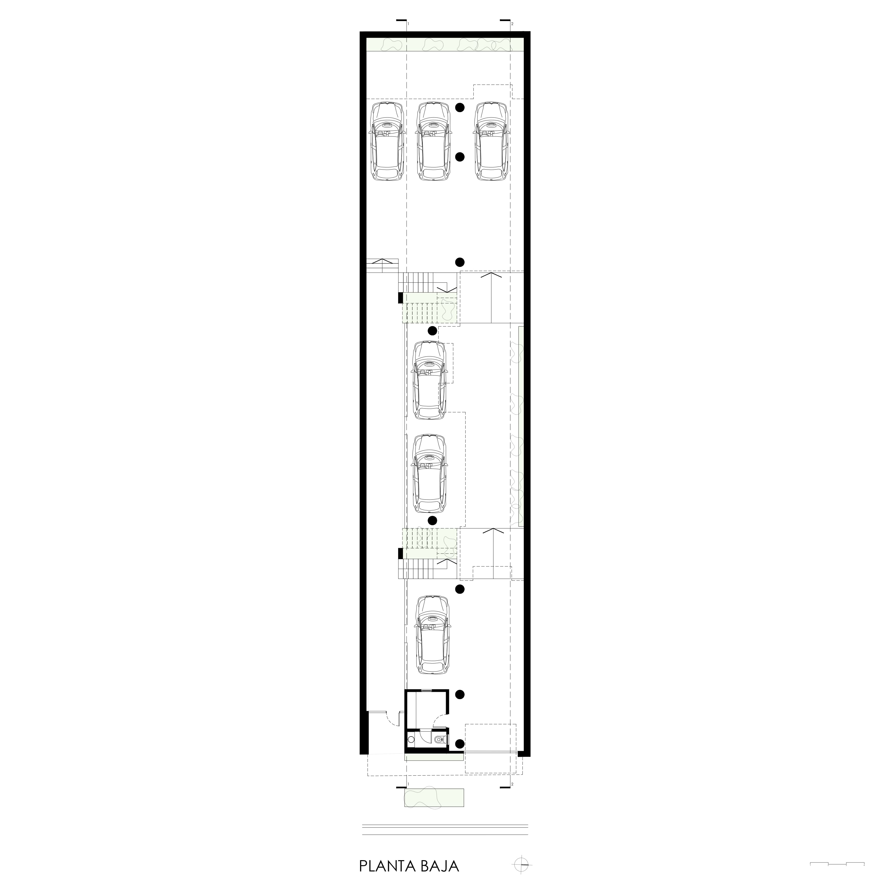
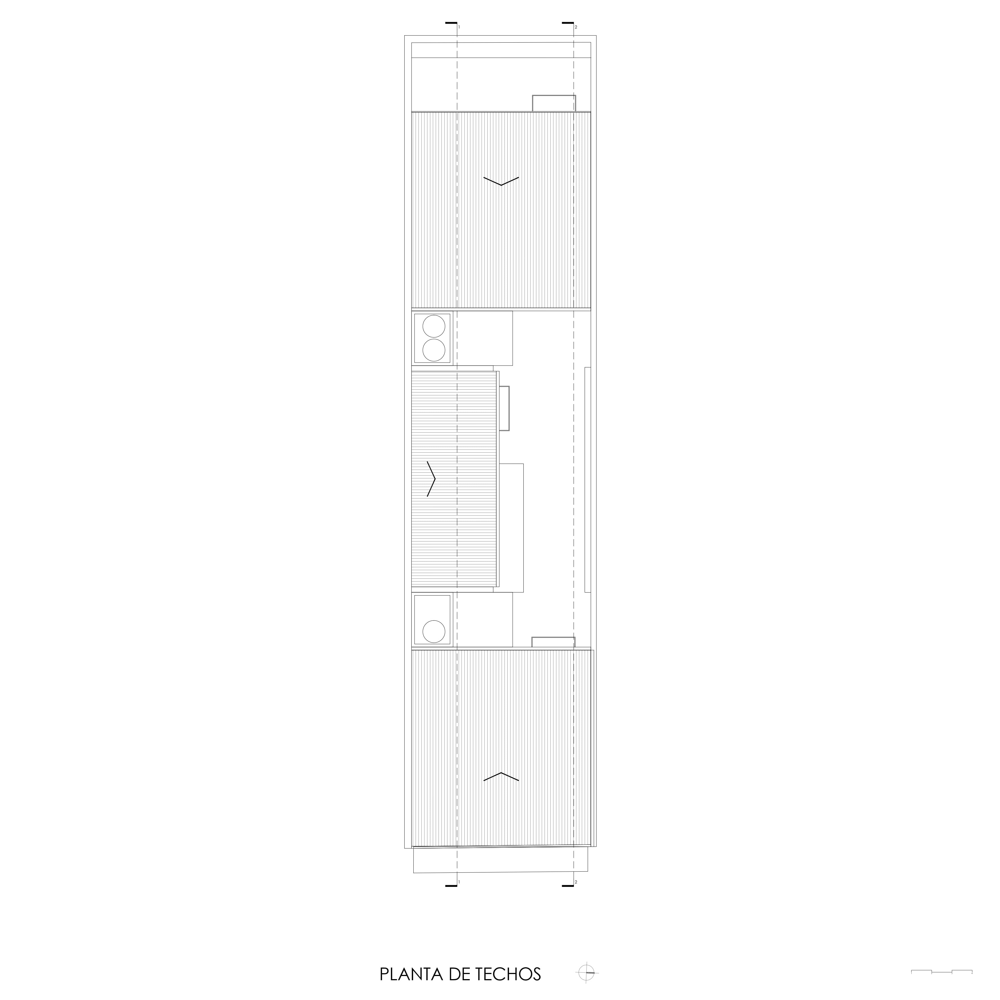
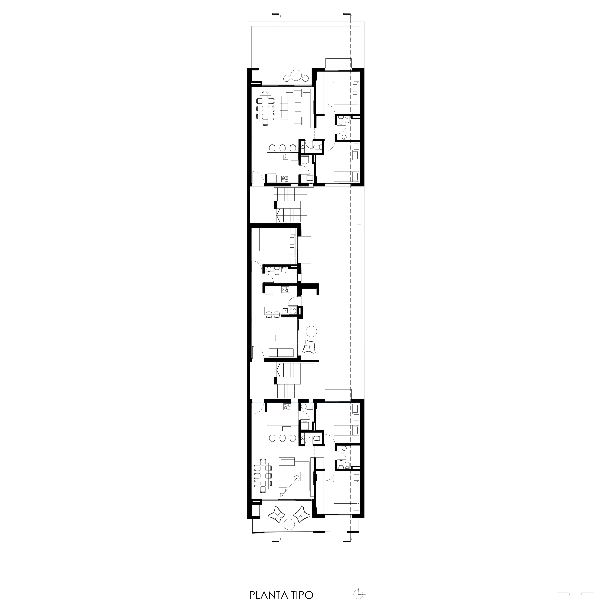
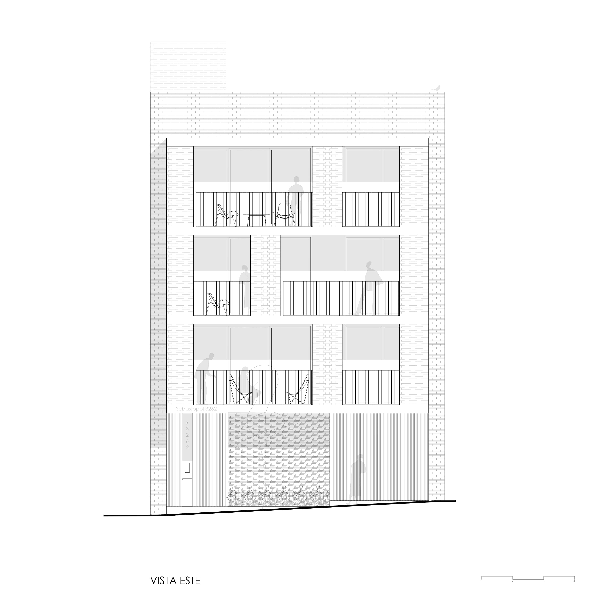
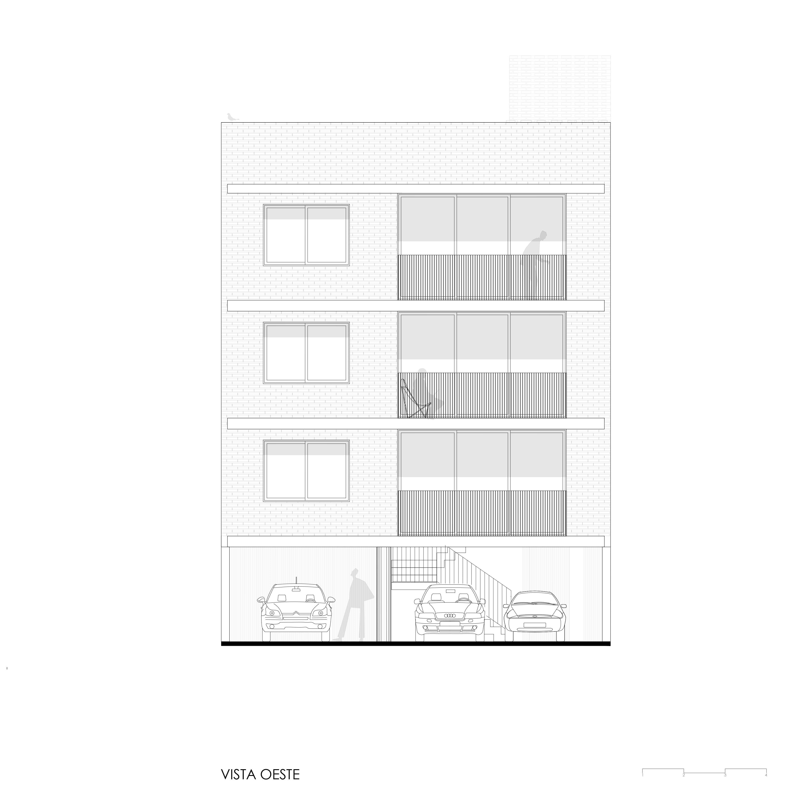
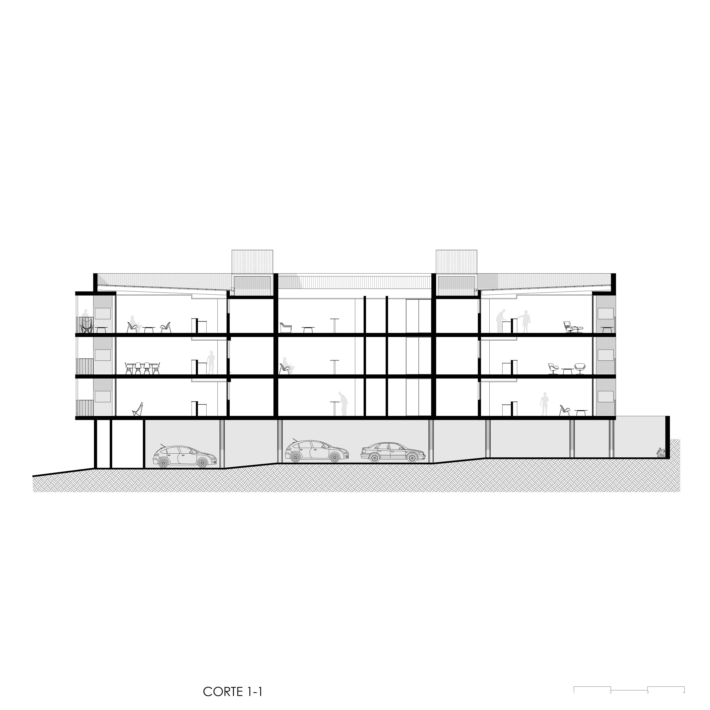
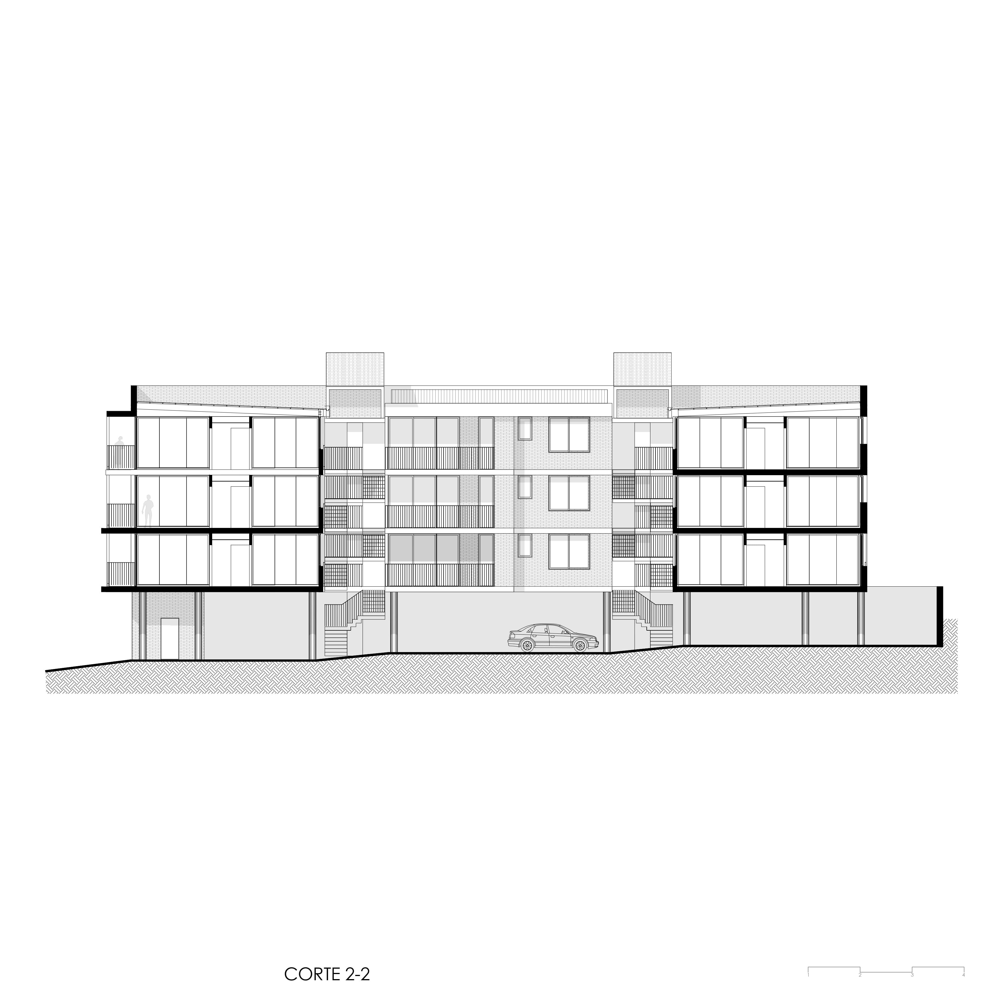

Estudio: MAGarq
Área: 830m2
Año: 2022
Arquitecta a cargo: María Antonella Genessini
Colaboradores: Roberto Dreger, Analia Cáceres, Mikela Bertolotti,
Susana López, Facundo Parra
Constructora: Proobra SA
Paisajismo: María Inés Guida
Director de obra: Gustavo Petersen
Fotografia: Sofia Schiavoni
Ciudad: Posadas-Misiones-Argentina
Descripción del proyecto
El edificio Sebastopol 3262 está destinado a viviendas y se emplaza en un barrio de baja densidad. El sector se caracteriza por ser una zona tranquila, con una abundante vegetación y de fácil acceso hacia las principales avenidas. Considerando estos factores, al momento de proyectar se buscó que la obra responda con un planteo abierto hacia el entorno. La principal intención es que la fachada se establezca como un nexo entre lo público y lo privado.
Teniendo en cuenta los factores ambientales, se ha planteado un esquema sencillo de tres volúmenes buscando las orientaciones más beneficiosas: el norte y el este. Al tratarse de un clima subtropical, hacen que las altas temperaturas y la humedad sean condicionantes a tener en cuenta.
El terreno se encuentra entre medianeras consolidadas. La volumetría general responde a la mejor orientación que brinda la zona, el este y el norte. Compuesto por tres volúmenes que se unen por dos núcleos verticales. La planta baja libre esta interconectada con pequeños jardines donde se ubican los accesos peatonales y vehiculares generando una relación dinámica y fluida hacia la calle. Por encima de ésta, se encuentra la planta tipo destinada a departamentos de uno y dos dormitorios.
Los departamentos cuentan con balcones corridos que se utilizan como área de expansión que al estar equipados con parrilla otorgan un fuerte carácter social. Los interiores poseen grandes ventanales garantizando la iluminación natural en los distintos ambientes. Los muros de color blanco refuerzan esta intención.
En cuanto a la materialidad se escogieron elementos característicos de la zona y de muy bajo mantenimiento, toda la envolvente se resuelve en ladrillo y hormigón visto. Fue así que la obra ha sido concebida con materiales y sistemas pasivos en búsqueda de alta aislación térmica: muros dobles con cámaras de aire, galerías que atenúan el sol y vidrios con sistema DVH.
Los muros cribados en ladrillo generan un juego de luces y sombras y a la vez que reducen el impacto directo del sol en los interiores.